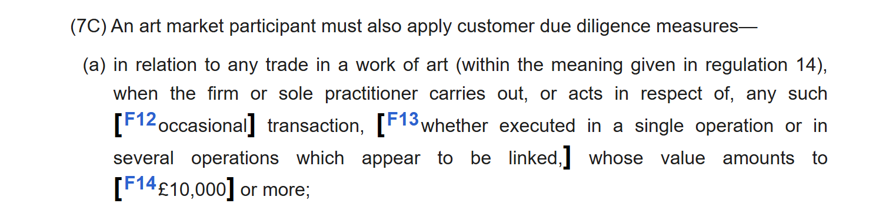

关于英国本本销售收藏品的反洗钱合规评估报告
评估人：AML Compliance 日期：2026-10-25
一、合规评估结论
平台义务类型：法定义务（仅就单笔或关联交易 ≥ £10,000 的艺术品交易；待律师就平台是否构成 intermediary（居间人）作最终确认）；是否可支持上线：有条件支持。
前置条件：
- 试点期硬性上限：单笔交易及同一买家 12 个月内关联交易合计均须 < £10,000（按含税、佣金、运费的最终发票价计算口径），系统强控，超限订单不予放行。
- 放开 £10,000 及以上交易前，须完成 HMRC 反洗钱注册（MLR 2017 reg 56），并落地书面 POCP、企业风险评估、指定 nominated officer、员工培训、5 年记录保存；未完成注册前不得上线超门槛交易。
- 核验商家 HMRC AMP 注册号及注册状态；取得其最近一年书面 AML Program 与 CDD 执行说明（字段、留痕方式、MLRO、EDD 触发、SAR 流程），未提供或未通过合规审核的，不开放该类目。
- 上线关联交易聚合监控（跨订单、跨月，按同一买家聚合）与 OFSI 制裁名单筛查；明确平台作为 relevant firm 的 OFSI 报告路径（2025-05-14 起适用）。
- 与商家签署义务分摊与资料提供条款：明确双方各自作为 AMP 的 CDD 责任、平台不代商家承担其法定 CDD 义务、商家须配合调取交易与客户资料。
建议管控措施：
| 编号 | 建议内容 | 责任团队 | 优先级 |
|---|---|---|---|
| A2 | 商家入驻进行强化尽调（EDD） | 治理 | 高 |
| A3 | 要求商家提交其最近一年的书面 AML Program 副本，且需经反洗钱合规审核通过 | 治理 | 高 |
| A5 | 初期以白名单形式放开（仅限已在 Amazon、eBay 经营的商家，或上市公司） | 业务/治理 | 高 |
| B1 | 不支持第三方支付代付 | 支付 | 高 |
| B4 | 退款仅支持原路退回，不支持向第三方账户打款；原路退回失败时，仅在下单人与付款人一致的情况下退至 credit | 支付 | 高 |
| B5 | 同一买家每日累计购买〔17–21 世纪原创画作〕不超过〔GBP 9,000〕 | 产品/风控 | 高 |
| B7 | 禁售：〔无来源记录或 provenance 无法追溯的画作、含象牙等受保护材质的作品、需出口许可的文物、非手工原创的复制品与装饰印刷品〕；允售：〔17–21 世纪手工原创画作，须提供作品来源、年代、品相与修复记录，并随单留存〕 | 治理/类目 | 高 |
| C1 | 接入风控反洗钱监控：大额交易监控 | 风控 | 高 |
| C2 | 接入风控反洗钱监控：累计金额监控 | 风控 | 高 |
| C5 | 接入名单筛查（制裁名单、PEP、负面清单） | 风控 | 高 |
| C6 | 达到报告门槛或发现可疑交易时，按当地要求上报并留存档案 | 合规 | 高 |
| D1 | 区分商品类目，对〔17–21 世纪原创二手画作〕打标，列入高风险商品类型 | 风控/类目 | 中 |
| G1 | 商家作为义务主体时，须对其买家履行 KYC 与记录保存义务，并向平台提供证明 | 治理 | 高 |
| H9 | 达到门槛的交易在放款或发货前完成买方（或实际付款人）身份核验，未通过者暂停履约 | 风控 | 高 |
| H10 | 商家协议明示禁止使用涉罪资金或违反反洗钱法规，违反即下架、冻结结算并终止合作 | 治理 | 中 |
| H11 | 商家主体信息与受益所有人信息到期或变更时触发复检，逾期未更新即限制上新 | 治理 | 中 |
二、业务评估背景信息
| 项目 | 内容 |
|---|---|
| 业务模式 | 本本（英国本地商家 → 英国本地买家，境内履约与收付，无跨境资金流） |
| Temu 角色 | marketplace（撮合方，代收货款并结算商家，按成交收取佣金；非自营、不取得商品所有权） |
| 计划销售国家/地区 | 英国 |
| 商品/服务类型 | 收藏品—17 至 21 世纪原创古董及复古画作、雕塑（首批仅画作；均为 pre-owned 二手原作，非常规装饰品；首批 3–5 幅，合计标价 < £10,000） |
| 单个商品价值 | 现有作品 GBP 800 – 40,000；首批试卖单件及合计标价均控制在 GBP 10,000 以下 |
| 资金流经与流向 | 买家卡支付 → 平台（经持牌 PSP 收单）→ 按周期结算商家；退款原路退回；无现金、无跨境汇款、无第三方代收 |
三、核心法规依据
| 法域 | 法条 | 原文要点 | 官方链接 | 效力状态 |
|---|---|---|---|---|
| 英国 | MLR 2017 reg 14(1)(d)(i)（SI 2026/621 于 2026-06-30 将门槛由 10,000 欧元改为 £10,000） | “art market participant”指以经营方式买卖艺术品、或为艺术品的买卖担任居间人（acts as an intermediary），单笔交易或一系列关联交易价值达 £10,000 以上的商号或个体执业者。 | https://www.legislation.gov.uk/uksi/2017/692/regulation/14 | 现行有效 |
| 英国 | HMRC Economic Crime Supervision Handbook ECSH54525（2026-10-23 更新） | AMP 类型明确包含“online sales platforms”；居间人指“以经营方式、为收取费用而主动促成艺术品买卖”的主体；线上销售平台只要收取佣金、费用或成交额百分比，即构成居间人，包括为英国客户服务但注册于境外的平台。交易价值按含税、佣金及同单杂费（如运费）的最终发票价计算；🟠同一发票分次付款、短期内多张独立发票均视为关联交易。 | https://www.gov.uk/hmrc-internal-manuals/economic-crime-supervision-handbook/ecsh54525 | 现行有效 |
| 英国 | MLR 2017 reg 27(7C) | AMP 对单笔或一系列关联交易价值达 £10,000 以上的艺术品交易，必须执行客户尽职调查（CDD），无论是否构成持续业务关系。  | https://www.legislation.gov.uk/uksi/2017/692/regulation/27 | 现行有效 |
| 英国 | MLR 2017 reg 18、19、21、24 | 须建立并维护书面的企业风险评估、书面政策/控制/程序（POCP）、指定负责反洗钱合规的高级管理人员（nominated officer），并对相关员工开展反洗钱培训。 | https://www.legislation.gov.uk/uksi/2017/692/regulation/19 | 现行有效 |
| 英国 | MLR 2017 reg 40 | CDD 资料与交易记录须自交易完成或业务关系终止之日起保存 5 年，并可按监管或执法要求及时提供。 | https://www.legislation.gov.uk/uksi/2017/692/regulation/40 | 现行有效 |
| 英国 | MLR 2017 reg 56 | 须在开展受监管活动前向 HMRC 申请反洗钱监督注册；🟠未注册即从事 AMP 活动构成犯罪，可处民事罚款或刑事追诉（HMRC 现行执法重点）。 | https://www.legislation.gov.uk/uksi/2017/692/regulation/56 | 现行有效 |
| 英国 | MLR 2017 reg 39（第三方依赖） | 可依赖第三方执行 CDD，但须：第三方同意被依赖、即时取得全部 CDD 信息、留存文件副本、并与之约定资料即时提供；委托方仍对 CDD 是否达标承担全部责任。被依赖方须受 MLR 或同等法规监管。 | https://www.legislation.gov.uk/uksi/2017/692/regulation/39 | 现行有效 |
| 英国 | Sanctions and Anti-Money Laundering Act 2018 项下 OFSI 报告义务（2025-05-14 起适用） | AMP 及高价商品经销商自 2025-05-14 起纳入“relevant firms”，在业务过程中知悉或有合理理由怀疑涉及受制裁人员或违反英国制裁的，须尽快向 OFSI 报告。AMP 的制裁法定义与反洗钱定义一致（已注册或应注册于 HMRC 者）。 | https://www.gov.uk/government/publications/financial-sanctions-guidance-for-high-value-dealers-and-art-market-participants | 现行有效 |
| 英国 | Russia (Sanctions) (EU Exit) (Amendment) (No. 8) Regulations 2022 reg 46B | 禁止将奢侈品（含列入第 97 章的 works of art，价值 ≥ £250 不含 VAT）出口至俄罗斯、提供给与俄罗斯关联的人士或供在俄罗斯使用。 | https://www.legislation.gov.uk/uksi/2022/452/made | 现行有效 |
| 英国 | Proceeds of Crime Act 2002 s330；MLR 2017 reg 74 | 受监管行业人员在业务中知悉、怀疑或有合理理由怀疑洗钱，须向 NCA 提交可疑活动报告（SAR），未披露构成犯罪；禁止泄露（tipping off）。 | https://www.legislation.gov.uk/ukpga/2002/29/section/330 | 现行有效 |
| 英国 | Value Added Tax Act 1994 s21(6)（经 MLR 2017 reg 14(f) 引用） | “works of art”包括完全手工绘制的画作、素描、粉画，原创雕塑、版画（限量并有作者签名/编号）等；批量复制品、装饰性印刷品不属于。首批画作如属手工原创，落入受管定义。 | https://www.legislation.gov.uk/ukpga/1994/23/section/21 | 现行有效 |
门槛值与生效日历：
| 法域 | 门槛项 | 现行值及口径 | 已公布变更 | 生效日 | 待落地动作 |
|---|---|---|---|---|---|
| 英国 | 艺术品交易 CDD 门槛 | €10,000（单笔或一系列关联交易合计） | £10,000（SI 2026/621） | 2026-06-30 | 结算与准入系统门槛参数切换；商家协议、KYC 问卷与留档期限同步更新 |
四、竞对与行业实操对标
下表为同类商品在其他电商平台的现行反洗钱做法，用于校准我方措施强度。竞对做法不作法律依据，仅作行业做法参考。
| 平台 | 页面与链接（抓取日期） | 原文摘录 | 对应管控动作 | 与我方措施差异 | 定性 |
|---|---|---|---|---|---|
| 1stDibs | Anti-Money Laundering Diligence https://support.1stdibs.com/hc/en-us/articles/14516291851291-Anti-Money-Laundering-Diligence（2026-10-25） | as an “art market participant” operating in the us and uk, 1stdibs is required to implement identity verification processes prior to completing transactions for the purchase of certain art and antiquities. … customers purchasing qualifying art will be contacted … and asked to verify their identity (or that of the payment owner) … before the payment can be processed … passport or government-issued photo id, a selfie and proof of address. | 达标艺术品交易在付款处理前强制核验买家或付款人身份（证件＋自拍＋地址证明）；未提交不处理订单，可取消订单 | 我方拟在商家准入做 EDD，未设交易级买家核身；需补达标交易买方核身（或依 reg 39 采信商家已做） | 行业做法 |
| eBay | Payments Terms of Use https://pages.ebay.com/payment/2.0/terms.html（2026-10-25） | payouts will be made to your linked financial account once you have completed the linked financial account verification process and we’ve finished checks for security, risk, anti-money laundering, and other legal assessments. … if we identify a financial, fraud or money financing risk, we will hold your payouts. | 提现前完成收款账户核验与 AML／风控审查；存在风险时暂扣付款；仅可提现至本人绑定账户 | 与拟采 B 类资金链路管控同向，无实质差异；可借鉴“风险即扣款”的处置时点 | 行业做法 |
| Amazon | Amazon Payments – Selling on Amazon User Agreement / 卖家身份核验 https://sellercentral.amazon.de/help/hub/reference/external/G201190410（2026-10-25） | we may require you to provide additional information to verify your and/or your business’ identity as a condition of providing the service to you（另据 INFORM Act 对高销量卖家做信息核验，不实即停用） | 卖家主体与经营者身份核验（证件＋90 天内银行/水电账单）；高销量卖家定期复核；保留补充核验权与停用权 | 我方 A1／A2 已覆盖首次核验，缺“定期复核触发条件”与“信息失效即停用”条款 | 行业做法 |
| Artsy | Terms（2.20） https://www.artsy.net/terms（2026-10-25） | will not use funds connected with any criminal activity or in violation of applicable anti-money laundering laws … | 以平台条款明示禁止使用涉罪资金及违反 AML 法规，作为下架、冻结、终止合作的合同依据 | 我方商家协议缺同等明示条款；建议补入（合同义务层，非新增法定义务） | 行业做法 |
| HMRC（监管口径） | ECSH54525 – Introduction to art market participants https://www.gov.uk/hmrc-internal-manuals/economic-crime-supervision-handbook/ecsh54525（2026-10-25） | online sales platforms will be an intermediary if they receive a commission, fee, or a percentage of a sale value. this could include online sales platforms that are based outside of the uk but act on behalf of uk customers. | 收佣的线上销售平台即 intermediary，属 AMP，须完成 HMRC 注册并履行 reg 18–28 义务；£10,000 门槛自 2026-06-30 起适用 | 直接决定义务主体判定，无差异项；按法定义务执行，强度高于全部竞对 | 监管预期（官方指引） |
对标要点：
- 可直接采用：1stDibs、eBay 已在同类商品上落地，我方同步落地不构成额外负担。
- 我方须高于竞对：受 MLR 2017 直接约束的 CDD、留档、SAR 义务不因竞对未做而豁免。
- 可选增强：竞对中属自愿性措施且超出门槛义务的部分（如实名买家自拍核验），列入增强项，不设为准入硬条件。
取证说明：本章证据为 2026-10-25 抓取的公开页面原文摘录与链接，可按 URL 复核；如需归档截屏，按表内链接打开后截屏并按模板 §5 图注格式插入。竞对做法仅作行业做法参考，不构成法律依据。
五、历史案例与执法记录
- HMRC 公开处罚数据（2025-04-01 至 2025-09-30）：AMP 类罚款 35 笔，其中 34 笔为未按期注册（reg 56），最高单笔 £36,400；上一半年最高单笔 £158,679（某画廊）。当前执法重点是“注册合规”，而非交易层面 CDD 细节。
- 市场对国家风险评估（2025-07）：艺术品市场风险等级由“高”下调为“中”，但仍保留被用于洗钱的风险判断；2025-12 监督报告将 AMP 列为固有风险最高的三个行业之一。
- 行业做法（非法律依据）：大型拍卖行对达门槛交易在竞拍前完成买家身份与地址核验，线上成交以第三方 CDD 服务在结算环节完成核身；平台型机构普遍以“平台执行买家核身 + 商家依 reg 39 采信”分担执行。
- 执法先例（2025-06）：英国首例艺术品制裁违规刑事判决，当事人因向受制裁人士出售约 £140,000 艺术品未提交 SAR 被判监 2 年 6 个月。
六、风险点
| 风险类型 | 是否存在 | 说明 |
|---|---|---|
| 资金链路风险 | 有 | 平台代收货款再结算商家，资金在平台侧停留；若退款路径可打向非付款人账户或允许第三方代付，将形成可自由流向第三方的通道。英国境内收付、经持牌 PSP 收单，跨境与现金维度风险较低。 |
| 主体资质风险 | 有 | 商家自称已完成 HMRC AMP 注册，但未提供注册号与注册状态，且未说明买家 CDD 由谁执行、收集哪些字段、如何留痕；商家 online-only、无实体店，非面对面交易占比 100%，身份核验强度低于线下。平台自身是否构成 AMP 亦待确认。 |
| 商品固有风险 | 有 | 高价值、便携、易变现，价格具主观性且缺乏公开可比价；真伪与来源（provenance）可被伪造，存在盗赃艺术品、非法出口文化财产及“自买自卖抬价”风险。17–21 世纪作品涉及跨境来源链条，二手属性使来源追溯更依赖商家自述。 |
| 履约真实性风险 | 有 | 画作单件价值高、需专业包装运输与投保，存在延迟交付、空包/调包、签收争议；若采用商家自配送或买家自提，平台缺乏轨迹验证手段。相对家具等大件，风险显著低于无轨迹类业务。 |
| 关联与团伙风险 | 有 | 存在拆单规避 £10,000 门槛（同一买家多笔、或短期内多张订单）的结构性诱因；买家实际受益人可能为经纪、代购或代拍人而未披露；商家与买家关联交易（自买自卖）可用于虚构成交价与洗白资金。 |
| 名单与地域风险 | 有 | 艺术品是制裁规避高发品类，俄罗斯奢侈品禁令覆盖 ≥ £250 的艺术品；买家可能为受制裁人士、PEP 或其关联方，且常有复杂持股与代理结构；英国已有艺术品制裁违规刑事判决先例。 |
七、待确认问题
- Temu 以“技术服务费/佣金”模式撮合并代收货款，是否被 HMRC 认定为 MLR 2017 reg 14(1)(d)(i) 的 intermediary 从而构成 AMP？HMRC 手册将收取佣金或成交额百分比的线上销售平台列为 intermediary，倾向认定为“是”；请律所出具书面意见。
- 若由境外主体为英国买卖双方提供服务（HMRC 明确境外平台亦可能入范围），注册义务应落在哪一家实体？是否需以英国实体注册？
- 试点期内全部交易均低于 £10,000 时，是否仍需先行注册 HMRC？“trading while unregistered”的起算时点如何认定？
- 平台若完成注册成为 AMP，商家能否依 reg 39 采信平台的买家 CDD？须满足哪些文件与同意要求（第三方同意、即时取得资料、文件副本、资料即时提供协议）？反向安排是否可行？
- 平台对“series of linked transactions”的聚合义务边界：是否需跨商家、跨月、按买家维度聚合？由平台还是商家负责聚合判断？
- 商家适用 UK VAT Margin Scheme 时，CDD 门槛的“交易价值”是否以差额征税发票的含税成交价为口径？（HMRC 规定按含税、佣金及杂费的最终发票价计算，需确认 margin scheme 下的取数）
待校准参数：
| 参数 | 建议值 | 说明 |
|---|---|---|
| 买家日累计购买限额（B5） | GBP 9,000 / 买家 / 日 | 低于法条 £10,000 门槛，兼作拆单规避控制；建议值，待风控校准 |
| 单笔大额监控阈值（C1） | GBP 8,000 预警；GBP 10,000 强制 CDD | 门槛取 MLR 2017 reg 14(1)(d)(i) 法定值；预警值建议值，待风控校准 |
| 关联交易观察窗口（C2） | 同一买家 12 个月内累计 GBP 9,000 触发预警 | HMRC 未规定固定窗口，按“短期内多张发票即关联”从宽设定；建议值，待风控校准 |
附：管控措施明细（含依据）
| 编号 | 建议内容 | 依据 | 责任团队 | 优先级 |
|---|---|---|---|---|
| A2 | 商家入驻进行强化尽调（EDD） | MLR 2017 reg 14(1)(d)(i)、reg 28；风险点2 | 治理 | 高 |
| A3 | 要求商家提交其最近一年的书面 AML Program 副本，且需经反洗钱合规审核通过 | MLR 2017 reg 19；风险点2 | 治理 | 高 |
| A5 | 初期以白名单形式放开（仅限已在 Amazon、eBay 经营的商家，或上市公司） | 平台偏好；风险点2 | 业务/治理 | 高 |
| B1 | 不支持第三方支付代付 | 风险点1、5；平台偏好 | 支付 | 高 |
| B4 | 退款仅支持原路退回，不支持向第三方账户打款；原路退回失败时，仅在下单人与付款人一致的情况下退至 credit | 风险点1；平台偏好 | 支付 | 高 |
| B5 | 同一买家每日累计购买〔17–21 世纪原创画作〕不超过〔GBP 9,000〕 | MLR 2017 reg 14(1)(d)(i)（关联交易聚合）；风险点5 | 产品/风控 | 高 |
| B7 | 禁售：〔无来源记录或 provenance 无法追溯的画作、含象牙等受保护材质的作品、需出口许可的文物、非手工原创的复制品与装饰印刷品〕；允售：〔17–21 世纪手工原创画作，须提供作品来源、年代、品相与修复记录，并随单留存〕 | VAT Act 1994 s21(6)；风险点3；平台偏好 | 治理/类目 | 高 |
| C1 | 接入风控反洗钱监控：大额交易监控 | MLR 2017 reg 27(7C)；平台偏好 | 风控 | 高 |
| C2 | 接入风控反洗钱监控：累计金额监控 | MLR 2017 reg 14(1)(d)(i)（关联交易）；平台偏好 | 风控 | 高 |
| C5 | 接入名单筛查（制裁名单、PEP、负面清单） | OFSI 报告义务（2025-05-14 起）；Russia (Sanctions) (EU Exit) (Amendment) (No. 8) Regulations 2022 reg 46B；风险点6 | 风控 | 高 |
| C6 | 达到报告门槛或发现可疑交易时，按当地要求上报并留存档案 | POCA 2002 s330；OFSI 报告义务；风险点6 | 合规 | 高 |
| D1 | 区分商品类目，对〔17–21 世纪原创二手画作〕打标，列入高风险商品类型 | 平台偏好；风险点3 | 风控/类目 | 中 |
| G1 | 商家作为义务主体时，须对其买家履行 KYC 与记录保存义务，并向平台提供证明 | MLR 2017 reg 27(7C)、reg 40；风险点2 | 治理 | 高 |
| H9 | 达到门槛的交易在放款或发货前完成买方（或实际付款人）身份核验，未通过者暂停履约 | MLR 2017 reg 27、reg 28；对标 1stDibs「付款处理前核验买家身份」 | 风控 | 高 |
| H10 | 商家协议明示禁止使用涉罪资金或违反反洗钱法规，违反即下架、冻结结算并终止合作 | 合同义务；对标 Artsy Terms 2.20 | 治理 | 中 |
| H11 | 商家主体信息与受益所有人信息到期或变更时触发复检，逾期未更新即限制上新 | MLR 2017 reg 26、reg 28；对标 Amazon 定期复核机制 | 治理 | 中 |